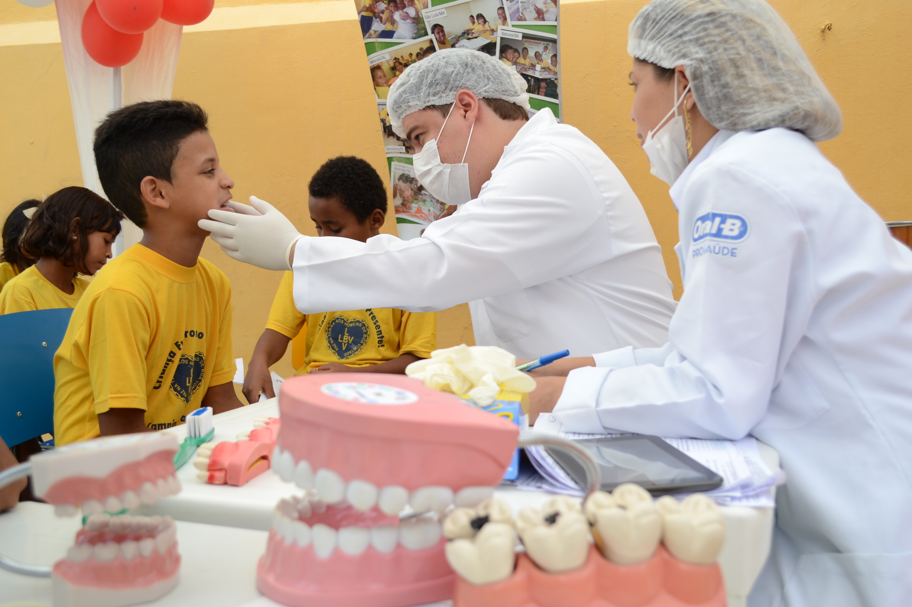

Problema
A ONG Turma do Bem é uma das maiores redes de voluntariado odontológico do mundo, reunindo milhares de dentistas que realizam atendimentos gratuitos a pessoas em situação de vulnerabilidade social. Com o crescimento da organização e a expansão para diferentes cidades e países, a gestão das informações se tornou um grande desafio.
O excesso de planilhas, formulários físicos e documentos descentralizados dificultava o controle de voluntários, beneficiários e atendimentos realizados. Muitos dados eram perdidos no processo de comunicação entre as equipes, gerando retrabalho, inconsistências e atrasos no acompanhamento dos casos. Essa desorganização impactava diretamente a eficiência das ações e a mensuração dos resultados sociais da ONG.
Solução
Para resolver esses desafios, o grupo desenvolveu o CRM Social — Nuvem do Bem, uma plataforma digital que centraliza e organiza todas as informações da Turma do Bem em um único sistema. O projeto foi pensado para garantir segurança, acessibilidade e praticidade na rotina dos colaboradores e voluntários.
Com o sistema, é possível cadastrar dentistas voluntários, beneficiários e patrocinadores, além de registrar cada atendimento realizado. Dessa forma, a comunicação entre as equipes se torna mais eficiente, permitindo gerar relatórios precisos e visualizar o impacto real dos atendimentos. A proposta é transformar a gestão da ONG em um processo simples, moderno e colaborativo — reduzindo erros e aumentando a transparência das ações sociais.
Tecnologias Utilizadas
O desenvolvimento do projeto foi realizado com base em tecnologias nativas da web: HTML5 para estrutura, CSS3 para estilização e JavaScript para validações e interatividade. A interface foi construída de forma responsiva, adaptando-se automaticamente a diferentes tamanhos de tela, garantindo acessibilidade em computadores, tablets e smartphones.
Além disso, o código segue boas práticas de organização, separando arquivos em pastas específicas e utilizando apenas classes no CSS (sem seletores diretos), o que facilita manutenção e escalabilidade.
Roadmap
- Sprint 1: Criação da estrutura base e páginas principais.
- Sprint 2: Responsividade, validações e interatividade.
- Sprint 3: Integrações e melhorias futuras.